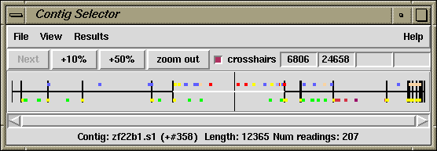

The gap4 Contig Selector is used to display, select and reorder contigs. In the Contig Selector all contigs are shown as colinear horizontal lines separated by short vertical lines. The length of the horizontal lines is proportional to the length of the contigs and their left to right order represents the current ordering of the contigs. Users can change the contig order by dragging the lines representing the contigs. This is done by clicking and holding the middle mouse button, or Alt left mouse button, on a line and then moving the mouse cursor. The Contig Selector can also be used to select contigs for processing. For example, clicking with the right mouse button on the line representing a contig will invoke a menu containing the commands which can be performed on that contig. There are several alternative ways of specifying which contig an operation should be performed on. Contigs are identified by the name or number of any reading they contain. When a dialogue is requesting a contig name, using the left mouse button to click on the contig in the Contig Selector will transfer its name to the dialogue box. Other methods are available (see section Selecting Contigs).
As the mouse is moved over a contig, it is highlighted and the contig name (left most reading name) and length are displayed in the Information Line. The number in brackets is the contig number (actually the number of its leftmost reading). Tags or annotations (see section Annotating and masking readings and contigs) can also be displayed in the Contig Selector window.

The figure shows a typical display from the Contig Selector. At the top are the File, View and Results menus. Below that are buttons for zooming and for displaying the crosshair. The four boxes to the right are used to display the X and Y coordinates of the crosshair. The rightmost two display the Y coordinates when the contig selector is transformed into the Contig Comparator. The two leftmost boxes display the X coordinates: the leftmost is the position in the contig and the other is the position in the overall consensus. The crosshair is the vertical line spanning the panel below. Tags are shown as coloured rectangles above and below the lines (see section Contig Selector).